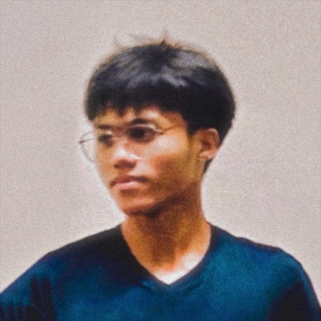

kerth@portfolio:~$ whoami
Kerth Michael
Yadao
thanks for stopping by!
- System
- [OK] Portfolio v2.3 loaded
- Role
- [OK] IT Specialist & Virtual Assistant
- Location
- [OK] Manila, Philippines · UTC+8
- Experience
- [OK] 2 years
- Status
- [LIVE] Open to remote work
System ready. Scroll to explore.

cat ./about.txt
I'm Kerth Michael Yadao, a professional based in Manila, Philippines. Over the past two years at one of the leading real estate technology companies globally — I've gone from inbound calls to handling escalated cases directly with management.
I'm transitioning into remote work because I want to explore more opportunities and go outside my comfort zone, and apply what I know in a more flexible, results-driven setup.
ls ./services
How I can help you
Every skill below comes from two years of actual corporate work and here's what I bring to the table.
Real Estate Admin VA
Appointment setting for property viewings, tenant communications, maintenance coordination, and CRM updates.
Inbound Customer Support
Handling high-volume inbound calls, resident and client inquiries, escalation triage, and case logging. Experienced in staying calm and solution-focused under pressure.
CRM & Data Management
Creating and updating records, managing case logs, building reports, and maintaining clean data across Salesforce and other CRM platforms.
Appointment Setting
Scheduling and confirming property viewings, service appointments, and prospect calls. Coordinating between parties and keeping records updated in the CRM.
Documentation & Reports
SOPs, meeting notes, case documentation, and basic reports using Microsoft 365. Accurate, clearly formatted, and delivered on time.
Maintenance Dispatch Support
Receiving and logging maintenance requests, coordinating with the relevant teams, and managing resident expectations throughout the process — accurately and without over-promising.
cat ./stack.txt
Tools I know
cat ./experience.log
Work Experience
Customer Care Associate
Elevated to a dedicated escalation-handling role. Worked directly with corporate management to resolve complex client issues and maintained accurate case records through Salesforce.
Contact Center Associate I
Handled inbound maintenance calls and appointment setting for residential leasing prospects. Worked across Genesys Cloud, Salesforce, and property management CRMs to support multifamily real estate clients.
Customer Service Representative
Handled chat support for a sports streaming startup. Built foundational experience in high-volume digital support environments.
ls ./projects
Things I build
some fun side projects i currently do *hopefully would also get me a job.
I administer an Ubuntu Linux server running 15+ containerized services through Portainer — photo management, cloud storage, music streaming, password management, DNS-level ad blocking, and uptime monitoring. Caddy handles reverse proxying across every service, Tailscale gives me secure remote access from anywhere.
A native Letterboxd client for iOS 6.
ls ./screenshots
Source on GitHub


Personal, non-commercial project. Not affiliated with, endorsed by, or supported by Letterboxd — all film data and artwork belong to Letterboxd and its contributors.
cat ./music.txt
Music & Creativity
Outside of work, I compose and produce original music. My debut album Trajectories, a personal project of mine that I'm genuinely proud of.
Trajectories
Composed, arranged, and produced entirely by me. Made in my small bedroom.
And if you work in podcasting, media, or content creation, I understand the space firsthand and bring that sensibility to every project.
Let's start!
Write it here and Send hands the message to your mail app, already addressed.
i make it happen if you’d give me a chance.
// 0 words
Send